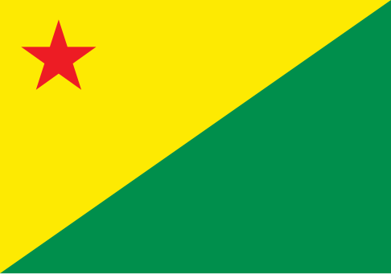

About me
My name is Lucas Maciel Afonso, and I’m from Acre, Brazil. I speak Portuguese, Spanish and English, which helps me connect with people from diverse backgrounds. I’m passionate about learning and love diving into topics like interpersonal communication, biology and technology. I’m also a video game lover, so if you want to talk about ff7 rebirth or any other games, I am down!!
Acre, Brazil
Acre, westernmost estado (state) of Brazil. Acre covers the southwesternmost part of Brazil’s Hiléi (Hylea), the forest zone of the Amazon River basin. Bounded north by Amazonas state, it has western and southern frontiers with Peru and southeastern with Bolivia. The capital is Rio Branco on the Rio Acre in the eastern part of the state. The state’s name is derived from that of the Rio Acre, which seems to be of Indian origin. Covered by tropical rainforest, Acre produces the highest-quality rubber in Brazil.